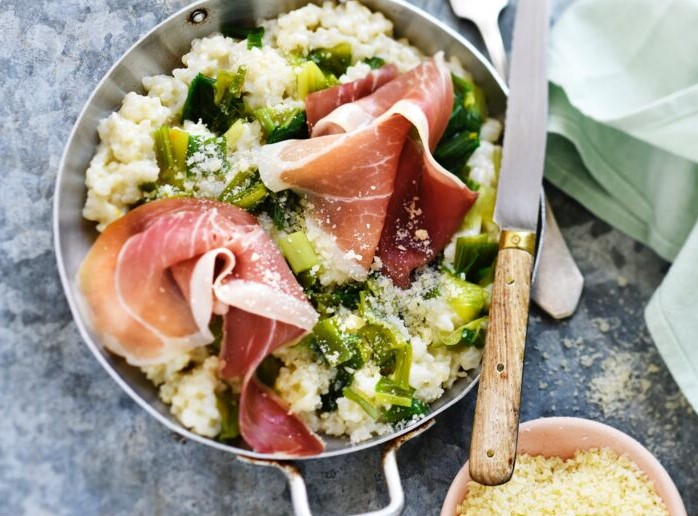

Libro de recetas !
Si no sabes que comer hoy por la cena, este sitio es desino para tí! En este página, comparto pocas de mis recetas que me gustan mucho!
Aqui son las diferentes recetas de la pagina :
- Ensalada de judías, huevos y queso de cabra !

- Bulgur, zapallo y queso azul !
- Croquetas de lentejas y choclo !
- Risotto de puerros !
- Puré de guisantes !
Buen provecho !
ENSALADA DE JUIDAS HUEVOS Y QUESO DE CABRA !
- Préparación : 30 min
- Cocción : 5 min

Ingredientes
- Judías frescas : 1.5 kg
- Queso de cabra : 70 g
- Huevos : 2
- Cebollas : 1
- Pan : 1
- Tomillo / sariette
- Aceite, ajo, vinagre
Preparación
Estos son los pasos a seguir:- Picar la sebolla en rodajas finas. Poner en un ensaladera, añadir vinagre, salar, saler y dejar macerar 20 minutos para que sean blandas.
- Cocinar los huevos duros y picarles en cuartos.
- Desgranar las judías, cocinarles 5 minutos en agua hirviendo salada con las hierbas. Lavar a agua fria para parar la cocción. Cuando son frias, quitar la secunda piel.
- Viertar el aceite sobre las cebollas. Añadir las judías, el queso cortado en rodajas y los huevos duros. Condimentar con sal y pimienta.
BULGUR, ZAPALLO Y QUESO AZUL!
- Préparación : 5 min
- Cocción : 35 min
Ingredientes
- Cebollas : 1
- Zapallo : 600 g
- Bulgur : 150 g
- Crema líquida : 200 ml
- Queso azul : 70g
Preparación
Estos son los pasos a seguir:- Cocinar la cebolla en agua. Para la cocción antés que sea demasiado blando (30 min).
- Cocinar el bulgur en un ollo diferente.
- Una vez cocidos, mezclar ambos. Añadir la crema y cocinar poco más.
- Añadir el queso a la fin de la cocción.
CROQUETAS DE LENTEJAS Y CHOCLO !
- Préparación : 20 min
- Cocción : 30 min

Ingredientes
- Lentejas : 1 boîte
- Choclo : 1 boîte
- Cebollas : 1
- Perejil : 1 bouquet
- Harina : 50 g
- Pan rallado : 50 g
- Huevos : 2
- Semillas de amapola / zapallos
- Aceite, sal, pimienta
Preparación
Estos son los pasos a seguir:- Si vienen de latas de conserva, drene las lentejas y el choclo.
- Quitar la piel y picar la cebolla. Lavar el perejil y separar las hojas.
- Batir aproximadamente las lentejas con la cebolla y el perejil.
- Añadir la harina y los huevos para hacer una masa consistente, las semillas y el choclo. Mezclar.
- Hacer croquetas en las manos con harina.
- Esparcir el pan rallado en un plato y rodar las croquetas.
- En un sartén, cocinar las croquetas en aceite por 5 minutos cada lado. Drenar un poco con papel.
RISOTTO DE PUERROS Y JAMON SERRANO !
- Préparación : 15 min
- Cocción : 30 min

Ingredientes
- Arroz de risotto : 300 g
- Caldo de ave : 30 cl
- Vino blanco seco : 10 cl
- Cebolla : 1
- Parmesano : 80 g
- Mantequilla : 40 g
- Jamon Serrano : 4 tramos
- Puerros : 4 blancs
- Sal, pimienta
Preparación
Estos son los pasos a seguir:- Lavar los puerros y cocinarles 25 minutos en agua hirviendo.
- Picar la cebolla y lavar el arroz hasta que el agua sea clara.
- En un sarten, calentar 20g de mantequilla. Añadir la cebolla y el arroz.
- Calentar 2 minutos a fuego pequeño mezclando.
- Aumentar el fuegon viertar el vino y esperar su evaporacion. Hacer lo mismo con el caldo.
- Añadir la mitad de parmesano y 20g de mantequilla. Cubertar y dejar 5 minutos. Condimentar con sal y pimienta.
- Picar la parte blanca de los puerros cocidos.
PURE DE GUISANTES Y PANCETA !
- Preparación : 15 min
- Cocción : 1h15 min

Ingredientes
- Guisantes secos : 400 g
- Papas : 400 g
- Panceta / parte grassa de cerdo (por el sabo de la cocción).
- Tocino : 4 tramos
- Cebolla : 1
- Laurel, tomillo
- Sal, pimienta
- Jugo de carne
Preparación
Estos son los pasos a seguir:- Quitar el piel de las papas (no picar).
- Picar la cebolla en 4.
- Poner los guisantes en un gran ollo con la cebolla, las papas, la panceta, el laurel, tomillo y pimienta.
- Llenar de agua hasta un poco más de la altura de los ingredientes.
- Cocinar en agua hirviendo 1h15.
- Esperando, cocinar el tocino.
- Quitar el carne y las hierbas del ollo. Batir.
- Condimentar y añadir el jugo de carne.